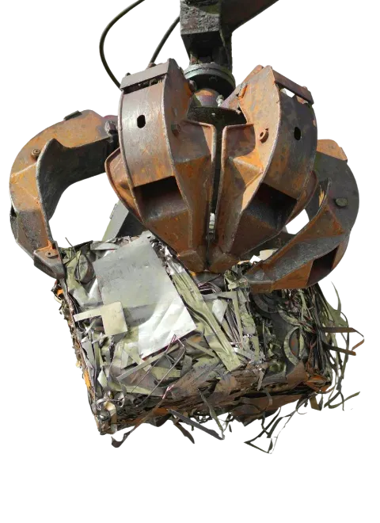
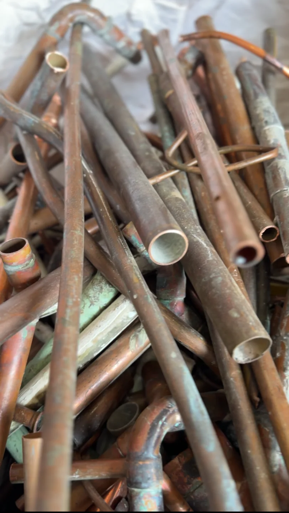
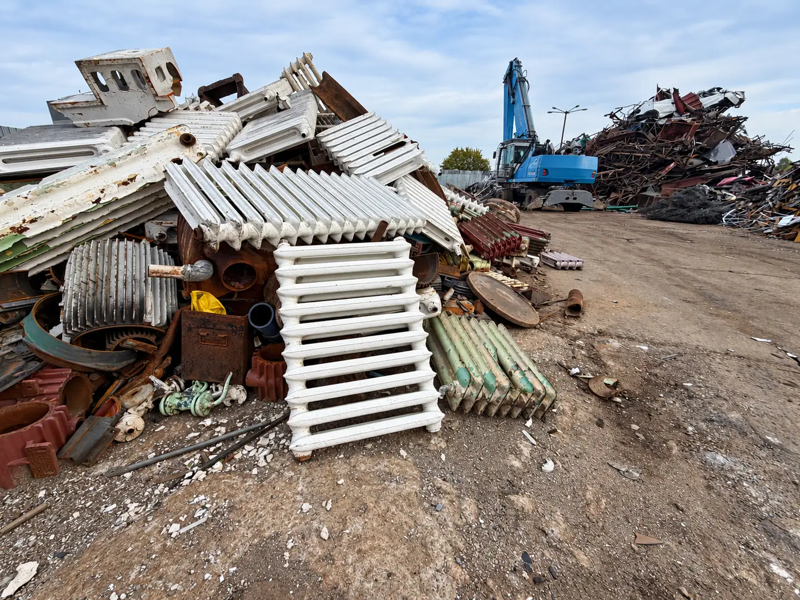

Metzłom to nowoczesny punkt odbioru złomu stalowego w Koszalinie, obecny na rynku od 1989 roku. Oferujemy przejrzyste warunki współpracy, uczciwą wycenę opartą na sprawdzonych procedurach oraz zaplecze techniczne przygotowane do przyjęcia transportów o dowolnej skali – od Klientów indywidualnych po duże przedsiębiorstwa z woj. zachodniopomorskiego.
Skontaktuj się z nami, aby otrzymać darmową wycenę swojego złomu opartą na aktualnych kursach rynkowych.
Obsługujemy zarówno osoby prywatne, jak i przedsiębiorstwa z Koszalina bądź innych miejscowości regionu zachodniopomorskiego, które regularnie generują odpady metalowe. W ramach oferty przyjmowane są również metale kolorowe, jednak kluczowym obszarem działalności pozostaje złom stalowy, obejmujący różnorodne frakcje oraz ilości. Masz zalegające rury, blachy lub wióry stalowe? Przywieź je do nas lub zapytaj o odbiór większych ilości.

Zajmujemy się także skupem złomu z tzw. nierdzewki – surowca wycenianego według odrębnych, wyższych stawek niż klasyczny wariant stalowy. Przyjmujemy elementy wykonane ze stali nierdzewnej pochodzące m.in. z:
Każda odbierana partia jest ważona i klasyfikowana osobno, co gwarantuje obiektywną wycenę zgodną z aktualnymi notowaniami surowca. Jeśli nie masz pewności, czy Twój materiał to stal nierdzewna czy zwykła stal konstrukcyjna – zadzwoń, a nasz zespół pomoże to ustalić telefonicznie lub podczas oględzin na miejscu.
Podstawiamy kontenery w różnych pojemnościach – sprawdza się to przy większych inwestycjach, rozbiórkach czy produkcji przemysłowej.
Odbieramy surowiec własnym transportem, bez konieczności organizowania logistyki po stronie Klienta.
Ważenie odbywa się na legalizowanych wagach samochodowych i mniejszych wagach stanowiskowych.
Całość procedury uzupełnia kompletna dokumentacja – KPO, faktury VAT oraz potwierdzenia odbioru.
Oferta punktu skupu stali Metzłom jest skierowana do szerokiego grona odbiorców z Koszalina lub okolic: firm produkcyjnych, zakładów usługowych, warsztatów, przedsiębiorstw budowlanych oraz osób prywatnych. Obsługujemy zarówno jednorazowe dostawy, jak i stałą współpracę, co jest szczególnie korzystne dla przedsiębiorstw generujących regularne ilości złomu stalowego.

Nasz zespół dba o to, aby każdy złom stalowy – od wiórów produkcyjnych po ciężkie konstrukcje stalowe – został rzetelnie zważony, a także sprawnie rozliczony. Gwarantujemy przejrzyste warunki współpracy, fachowe doradztwo oraz pełne wsparcie w zakresie dokumentacji środowiskowej. Skontaktuj się z Metzłom i uzyskaj najlepszą ofertę w regionie woj. zachodniopomorskiego!
Choć nasz profesjonalny skup stali mieści się przy ulicy Szczecińskiej w Koszalinie, zasięg transportowy Metzłom obejmuje znacznie szerszy obszar woj. zachodniopomorskiego, w tym:
ul. Szczecińska 25A, Koszalin
(wjazd od ul. Brzozowej)
Planujesz większe porządki na placu budowy lub w magazynie? Skontaktuj się z nami, aby ustalić dogodny termin.
Tak, tzw. nierdzewka wyceniana jest według odrębnych, wyższych stawek niż klasyczny złom stalowy. Każda partia jest ważona i klasyfikowana osobno.
Tak, podstawiamy kontenery w różnych pojemnościach bezpośrednio na miejsce inwestycji, co sprawdza się przy rozbiórkach i produkcji przemysłowej.
Kompletną dokumentację – Kartę Przekazania Odpadu (KPO), fakturę VAT oraz potwierdzenie odbioru.
Podaj nam podstawowe informacje o surowcach lub usłudze, którą jesteś zainteresowany.
Przygotujemy ofertę i skontaktujemy się z Tobą.
Słupsk
ul. Grunwaldzka 3, 76-200 Słupsk